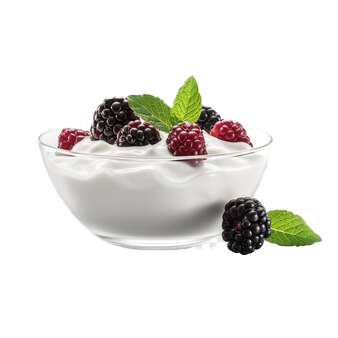
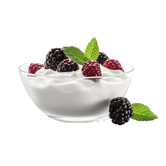

Sản phẩm mới
Sữa chua tốt cho sức khỏe

Sữa chua là một loại thực phẩm được tạo ra từ quá trình lên men sữa các vi khuẩn. Hầu hết các loại sữa đều có thể dùng làm sữa chua, tuy nhiên sữa bò là được dùng nhiều hơn hết. Sữa chua hay được gọi là yaourt (là da-ua). Chúng được lên men từ sữa động vật nhờ vi khuẩn lastic, đã được khử chất béo và thanh trùng ở nhiệt độ 80-90 độ C. Sữa chua có 2 loại cơ bản là sữa chau có đường và sữa chua không đường. Bên cạnh đó còn loại sữa chua uống, sữa chua men sống. Váng sữa thường được chia làm 3 laoij dựa vào hàm lương chất béo có trong sản phẩm: váng sữa có hàm lương chất béo cao nhất (35-50% chất béo), váng sữa thông thường (10-30% chất béo), váng sữa nguyên kem(6-15% chất béo) Xem chi tiết
Góc thành viên
Sữa chua làm nhà
Sữa chua (yaourt) là một món tráng miệng vừa ngon lại phù hợp cho nhiều lứa tuổi vì cung cấp nhiều chất dinh dưỡng, hỗ trợ tiêu hóa và giúp làm đẹp da. Vào bếp xem ngay 2 cách làm sữa chua (yaourt) chuẩn vị ngay tại nhà cho gia đình cùng thưởng thức nhé! Xem chi tiết
Hướng dẫn làm sữa chua không đường
Nguyên liệu làm sữa chua không đường
- 1 lít sữa tươi không đường
- 1 hộp sữa chua men cái không đường (bạn có thể mua sữa chua đóng hộp không đường như Vinamilk, TH True Milk,...)
- Dụng cụ nấu và ủ sữa chua
Các bước thực hiện
- Cho sữa chua không đường vào nồi, đun nóng lên và khuấy đều, nhẹ tay theo 1 chiều. Tới khi sữa đạt khoảng 40 độ C thì tắt bếp. Bạn có thể dùng tay để kiểm tra, thấy sữa vùa phải là được.
- Đổ hộp sữa chua lên mem cái vào và khuất đều, múc vào hủ và đem đi ủ 6-8 tiếng.
- Sau khi ủ xong, bạn có thể dùng 1 hủ sữa chua vùa ủ để ăn thử, nếu thấy đạt vị sữa chua rồi có thể bảo qunar trong ngăn mát tủ lạnh và thưởng thức ngay nhé.
Đặt hàng ngay
-
Gọi điện
-
Đặt hàng
-
Nhận hàng
-
Thanh toán